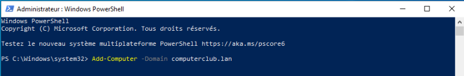
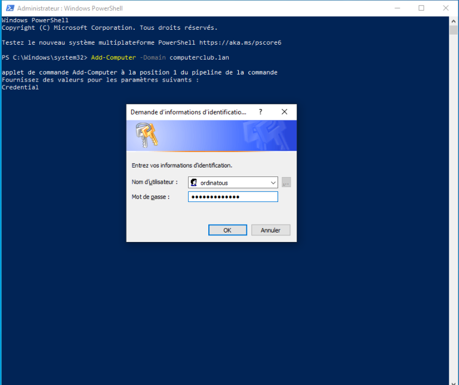
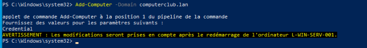
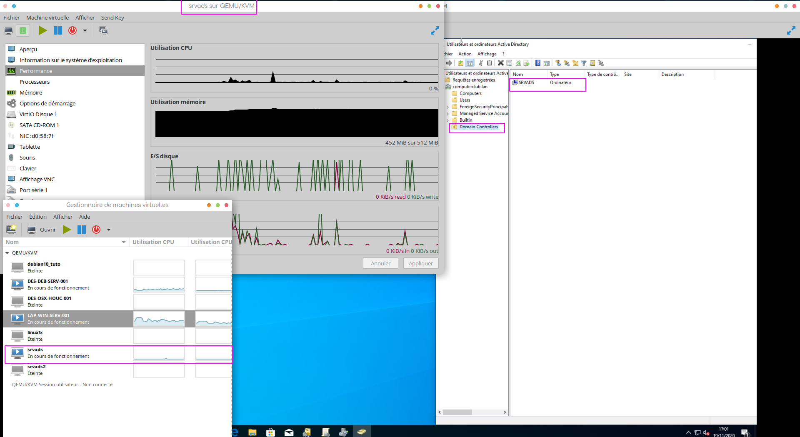

10 min read
Samba Activ Directory
November 22, 2020
Samba4 en mode Activ Directory
Contexte
Les 4 serveurs seront des débian stretch
Un sera une débian buster
| srvads |
computerclub.lan |
débian stretch |
controleur de domaine annuaire LDAP |
192.168.200.2 |
/24 |
192.168.200.1 |
| srvads2 |
computerclub.lan |
débian stretch |
Réplication du DC et LDAP/failover |
192.168.200.3 |
/24 |
192.168.200.1 |
| srvrodc |
computerclub.lan |
débian stretch |
controleur de domaine en lecture seule |
192.168.200.4 |
/24 |
192.168.200.1 |
| srvfiles |
computerclub.lan |
débian stretch |
serveur de fichiers |
192.168.200.5 |
/24 |
192.168.200.1 |
| srvwapt |
computerclub.lan |
débian buster |
gestion de la bibliothèque logiciel |
192.168.200.6 |
/24 |
192.168.200.1 |
Une machine windows 10 servira de console de gestion de l’annuaire
Active Directory (en réalité openLDAP) a l’aide des outils de gestion à
distance Microsoft ActivDirectory aka RSAT.
Hyperviseur KVM :
kvm –version QEMU emulator version 3.1.0 (Debian 1:3.1+dfsg-8+deb10u8)
Copyright (c) 2003-2018 Fabrice Bellard and the QEMU Project
developers
Gestion de la partie réseau avec virsh. Voir article fixer une IP
avec virsh
Master débian
Je vais préparer une master de la débian stretch avec :
- sudo
- vim , most et git
- ohmyzsh avec le thème powerlevel10k
Voir les articles préparation
débian et
tuner son shell
Préparation des serveurs débian
Les commandes pour installer et configurer samba4 sont valable pour
les 2 serveurs srvads et srvads2.
Sur chaques machines modifier les fichiers qui suivent :
modifier le nom et l’IP en fonction des machines
Redémarrer pour valider les changement avec reboot.
Configuration complémentaire
Passer le système en anglais
apt install -y locales-all
localectl set-locale LANG=en_US.utf8
localectl status
Désactiver avahi-daemon (protocol mdns / bonjour) :
systemctl stop avahi-daemon.service avahi-daemon.socket
systemctl disable avahi-daemon.service avahi-daemon.socket
Mettre à jour Debian9 et installer les outils indispensables suivants :
apt update -y
apt install -y wget sudo screen nmap telnet tcpdump rsync
net-tools dnsutils htop apt-transport-https
Ajout des dépots de tranquillIT
wget -O tissamba-pubkey.gpg http://samba.tranquil.it/tissamba-pubkey.gpg
sha256sum tissamba-pubkey.gpg
bd0f7140edd098031fcb36106b24a6837b067f1c847f72cf262fa012f14ce2dd tissamba-pubkey.gpg
apt-key add tissamba-pubkey.gpg
echo "deb https://samba.tranquil.it/debian/samba-4.10/ $(lsb_release -c -s) main" > /etc/apt/sources.list.d/tissamba.list
Installer les paquets
apt update -y && apt install -y samba winbind libnss-winbind krb5-user smbclient ldb-tools
Instancier le domaine Active Directory Samba
Sauvegarder la configuration initiale de kerberos mv /etc/krb5.conf /etc/krb5.conf.bak .
 D’une manière générale c’est toujours une bonne idée de
sauvegarder la configuration d’origine.
D’une manière générale c’est toujours une bonne idée de
sauvegarder la configuration d’origine.
Créer le fichier : vi /etc/krb5.conf
- pour
srvads.computerclub.lan
[libdefaults]
default_realm = COMPUTERCLUB.LAN
dns_lookup_kdc = true
dns_lookup_realm = false
- pour
srvads2.computerclub.lan
[libdefaults]
default_realm = COMPUTERCLUB.LAN
dns_lookup_kdc = false
dns_lookup_realm=false
[realms]
COMPUTERCLUB.LAN = {
kdc = 127.0.0.1
kdc = 192.168.200.2
}
- Supprimer le fichier de configuration , il sera recrée au
provisionning:
rm -f /etc/samba/smb.conf
- Configurer Samba avec le role de controleur de domaine :
pour srvads.computerclub.lan
samba-tool domain provision --realm=COMPUTERCLUB.LAN --domain
COMPUTERCLUB --server-role=dc
pour srvads2.computerclub.lan
samba-tool domain join computerclub.lan DC -U administrator
--realm=COMPUTERCLUB.LAN -W COMPUTER
- Vérifier que le fichier
/etc/samba/smb.conf dispose d’un forwarder
valable, j’ai pris l’habitude d’utiliser ceux de la FDN.
dns forwarder = 80.67.169.12
Puis reconfigurer /etc/resolv.conf
search computerclub.lan
nameserver 127.0.0.1
- le script de création de domaine Samba crée un fichier
/var/lib/samba/private/krb5.conf inutile. Il faut le supprimer et
le remplacer par un lien symbolique vers le fichier /etc/krb5.conf
:
rm -f /var/lib/samba/private/krb5.conf
ln -s /etc/krb5.conf /var/lib/samba/private/krb5.conf
- activer Samba pour qu’il démarre automatiquement au prochain reboot
:
systemctl unmask samba-ad-dc
systemctl enable samba-ad-dc
systemctl disable samba winbind nmbd smbd
systemctl mask samba winbind nmbd smbd
- redémarrer la machine avec un reboot pour vérifier que Samba
redémarre bien ;
- après redémarrage, tester que le kerberos est bien configuré et que
vous obtenez bien un TGT :
L’administrateur par défaut est administrator en anglais
(taper le mot de passe du compte administrator, si ça ne renvoie rien
ou que vous obtenez un message concernant l’expiration du mot de
passe, c’est que c’est bon).
kinit administrator
klist
dig @localhost google.fr
dig @localhost srvads.mondomain.lan
dig -t SRV @localhost _ldap._tcp.mondomain.lan
Ajouter une machine Windows10 dans le domaine
Dans un premier temps , on vérifie la configuration IP de la machine ,
et on veille à ce que ce soit le bon DNS qui réponde.
Pour cela utiliser l’ancien panneau de configurations , et ne pas
passer par l’icone réseau en bas à droite .
Ensuite une méthode simple et efficace :
- lancer powershell en mode administrateur , entrer cette commande:
Add-Computer -Domain computerclub.lan

Un prompt s’ouvre , utiliser un compte administrateur du domaine pour
l’intégrer, ou celui de l’utilisateur , s’il est déjà créé dans le
domaine.

Puis redemmarer la machine pour valider avec cette commande.

Ajouter les outils de gestion à distance RSAT
D’aprés Microsoft:
IMPORTANT : À partir de la mise à jour d’octobre 2018 de Windows 10,
RSAT est inclus comme un ensemble de « Fonctionnalités à la demande »
dans Windows 10 même. Voir « Instructions d’installation » ci-dessous
pour plus de détails et « Informations supplémentaires » pour les
recommandations et les dépannages.
Une manière très simple d’installer RSAT est de passer par le
powershell, et d’utiliser cette commande:
Get-WindowsCapability -Online | ? Name -like 'RSAT*'|Where {$_.State -eq 'NotPresent'} |foreach {Add-WindowsCapability -online -name $_.Name}
- Suis-je le seul a penser que cette syntaxe est moche ? Et que la
complétion est franchement nulle ?

DNS BIND9
Bien que Samba-AD vienne par défaut avec son propre serveur DNS interne,
Tranquil IT recommande l’usage de Bind-DLZ.
Le serveur Samba-AD sera probablement sur un réseau NATé et il sera
alors préférable de configurer un forwarder DNS :
- installer le paquet Bind :
- modifier la section options du fichier
/etc/bind/named.conf.options:
options {
directory "/var/cache/bind";
forwarders {
1.1.1.1;
};
allow-query { any;};
dnssec-validation no;
auth-nxdomain no; # conform to RFC1035
listen-on-v6 { any; };
tkey-gssapi-keytab "/var/lib/samba/bind-dns/dns.keytab";
minimal-responses yes;
};
- modifier la section local du fichier
/etc/bind/named.conf.local :
dlz "mydomain.lan" {
# For BIND 9.9.0
database "dlopen /usr/lib/x86_64-linux-gnu/samba/bind9/dlz_bind9_10.so";
};
désactiver le bind en IPv6 sur le réseau local, dans /etc/default/bind9 :
# run resolvconf?
RESOLVCONF=no
# startup options for the server
OPTIONS="-4 -u bind"
Le plugin DLZ doit accéder directement aux bases LDB de
Samba (l’équivalent de NTDS.DIT). Ce mode de fonctionnement n’est
certes pas optimal pour la séparation des services au sein de l’AD.
Toutefois, il est nécessaire. dans le fichier /etc/samba/smb.conf,
ajouter la ligne suivante et commenter la ligne dns forwarders :
[global]
server services = -dns
# dns forwarder =
Les commandes suivantes vont créer un compte dans le
serveur AD pour le serveur Bind. Cela n’est pas nécessaire si l’on ne
veut pas bénéficier des mises à jour dynamiques (ce qui peut être
éventuellement souhaitable).
- Créer deux répertoires dans /var/lib/samba
mkdir /var/lib/samba/bind-dns
mkdir /var/lib/samba/bind-dns/dns
- Configurer les mises à jour dynamiques des entrées DNS :
samba_upgradedns --dns-backend=BIND9_DLZ
- Relancer les services samba et bind :
systemctl restart samba-ad-dc
systemctl restart bind9
- Vérifier la bonne configuration de Bind et de DLZ
- vérifier que c’est bien le serveur bind qui écoute sur le port
53 :
netstat -tapn | grep 53
tcp 0 0 192.168.149.11:53 0.0.0.0:* LISTEN 5291/named
- tester des requêtes locales et des requêtes en récursion :
dig @localhost google.fr
dig @localhost srvads.mydomain.lan
dig -t SRV @localhost _ldap._tcp.mydomain.lan
Active Directory est basé sur le protocole Kerberos qui
nécessite une quasi parfaite synchronisation des horloges entre les
stations de travail membres du domaine et le contrôleur de domaine
Samba-AD. NTP sert à assurer la synchronisation entre les horloges des
différents appareils du réseau.
- installer les paquets NTP et choisir un serveur de temps sur
Internet :
apt install ntpdate ntp
ntpdate -bu pool.ntp.org
- Rajouter les lignes suivantes à
/etc/ntp.conf pour gérer le NTP
signé utilisé par les postes windows pour qu’ils synchronisent
automatiquement leurs horloges avec le service NTP :
ntpsigndsocket /var/lib/samba/ntp_signd
restrict default mssntp
- changer le propriétaire du répertoire contenant la socket samba
servant à authentifier le service NTP :
chgrp ntp /var/lib/samba/ntp_signd
systemctl restart ntp
Maintenant, nous allons pouvoir installer Samba en mode Active
Directory. Ca avance, c’ Forcer une resynchronisation sur un poste
windows
Lancer la commande suivante dans un shell avec les droits admins qui
demande au serveur ntp client local Windows de faire une synchro.
Si tout se passe bien, la commande renvoie La commande s’est terminée
correctement .
.
il faut laisser un peu de temps à un serveur NTP avant
de lui demander son temps, sinon, il se déclare comme n’étant pas une
source fiable.
En cas de problème Le service s’appelle w32time alors que
l’outil de management s’appelle w32tm. Il se peut que l’on ait aussi
besoin de la commande net time.
- Reconfigurer des postes windows pour qu’ils utilisent l’AD pour le
NTP.
Synchronyser le second serveur srvads2
récupérer le contenu de \srvads\sysvol et le copier sur le nouveau
serveur AD depuis un poste Windows en tant qu’Administrateur du domaine.
Sur le contrôleur de domaine secondaire, lancer la commande :
rsync -aP root@srvads1:/var/lib/samba/sysvol/ /var/lib/samba/sysvol/
- Ensuite vérifier les ACL sur le SYSVOL, et le cas échéant
réinitialiser les ACLs :
samba-tool ntacl sysvolreset
samba-tool ntacl sysvolcheck
Tester la configuration samba-AD
Sur srvads.computerclub.lan
samba-tool domain info 192.168.200.2
Forest : computerclub.lan
Domain : computerclub.lan
Netbios domain : COMPUTERCLUB
DC name : srvads.computerclub.lan
DC netbios name : SRVADS
Server site : Default-First-Site-Name
Client site : Default-First-Site-Name
samba-tool domain info 192.168.200.3
Forest : computerclub.lan
Domain : computerclub.lan
Netbios domain : COMPUTERCLUB
DC name : srvads2.computerclub.lan
DC netbios name : SRVADS2
Server site : Default-First-Site-Name
Client site : Default-First-Site-Name
net ads info
LDAP server: 192.168.200.3
LDAP server name: srvads2.computerclub.lan
Realm: COMPUTERCLUB.LAN
Bind Path: dc=COMPUTERCLUB,dc=LAN
LDAP port: 389
Server time: Wed, 25 Nov 2020 09:06:16 CET
KDC server: 192.168.200.3
Server time offset: 0
Last machine account password change: Thu, 19 Nov 2020 08:50:45 CET
wbinfo -P
checking the NETLOGON for domain[COMPUTERCLUB] dc connection to "srvads.computerclub.lan" succeeded
❯ wbinfo -t
checking the trust secret for domain COMPUTERCLUB via RPC calls succeeded
❯ wbinfo -pPt
Ping to winbindd succeeded
checking the NETLOGON for domain[COMPUTERCLUB] dc connection to "srvads.computerclub.lan" succeeded
checking the trust secret for domain COMPUTERCLUB via RPC calls succeeded
Sur srvads2.computerclub.lan
samba-tool domain info 192.168.200.3
Forest : computerclub.lan
Domain : computerclub.lan
Netbios domain : COMPUTERCLUB
DC name : srvads2.computerclub.lan
DC netbios name : SRVADS2
Server site : Default-First-Site-Name
Client site : Default-First-Site-Name
net ads info
LDAP server: 192.168.200.3
LDAP server name: srvads2.computerclub.lan
Realm: COMPUTERCLUB.LAN
Bind Path: dc=COMPUTERCLUB,dc=LAN
LDAP port: 389
Server time: mer., 25 nov. 2020 09:16:32 CET
KDC server: 192.168.200.3
Server time offset: 0
Last machine account password change: ven., 20 nov. 2020 18:18:08 CET
wbinfo -P
checking the NETLOGON for domain[COMPUTERCLUB] dc connection to "srvads2.computerclub.lan" succeeded
❯ wbinfo -t
checking the trust secret for domain COMPUTERCLUB via RPC calls succeeded
❯ wbinfo -pPt
Ping to winbindd succeeded
checking the NETLOGON for domain[COMPUTERCLUB] dc connection to "srvads2.computerclub.lan" succeeded
checking the trust secret for domain COMPUTERCLUB via RPC calls succeeded
Connexion sur le serveur maitre
smbclient -L localhost -U%
Sharename Type Comment
--------- ---- -------
netlogon Disk
sysvol Disk
IPC$ IPC IPC Service (Samba 4.10.17-Debian)
Reconnecting with SMB1 for workgroup listing.
Server Comment
--------- -------
Workgroup Master
--------- -------
WORKGROUP SRVADS2
Voici quelques commandes samba-tool
Commande d’aide
samba-tool -h
Usage: samba-tool <subcommand>
Main samba administration tool.
Options:
-h, --help show this help message and exit
Version Options:
-V, --version Display version number
Available subcommands:
computer - Computer management.
dbcheck - Check local AD database for errors.
delegation - Delegation management.
dns - Domain Name Service (DNS) management.
domain - Domain management.
drs - Directory Replication Services (DRS) management.
dsacl - DS ACLs manipulation.
forest - Forest management.
fsmo - Flexible Single Master Operations (FSMO) roles management.
gpo - Group Policy Object (GPO) management.
group - Group management.
ldapcmp - Compare two ldap databases.
ntacl - NT ACLs manipulation.
ou - Organizational Units (OU) management
processes - List processes (to aid debugging on systems without setproctitle).
rodc - Read-Only Domain Controller (RODC) management.
schema - Schema querying and management.
sites - Sites management.
spn - Service Principal Name (SPN) management.
testparm - Syntax check the configuration file.
time - Retrieve the time on a server.
user - User management.
visualize - Produces graphical representations of Samba network state
For more help on a specific subcommand, please type: samba-tool <subcommand> (-h|--help)
Vérifier le niveau fonctionnel ActivDirectory
samba-tool domain level show
Domain and forest function level for domain 'DC=computerclub,DC=lan'
Forest function level: (Windows) 2008 R2
Domain function level: (Windows) 2008 R2
Lowest function level of a DC: (Windows) 2008 R2
Ce travail est sous licence Attribution-NonCommercial 4.0
International.